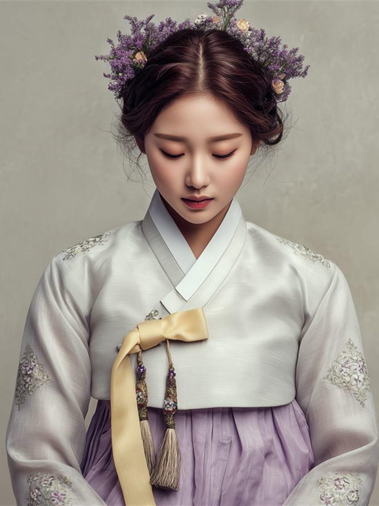

소개
빛을
읽는 사람
같은 자리에서 같은 표정으로 찍히는 사람은 없습니다.
그날의 빛과 옷, 얼굴의 컨디션까지 —
다름스튜디오은 셔터를 누르기 전 20분을 읽는 데 씁니다.
2014년 구로에서 문을 연 뒤 줄곧 한 사람이 찍는 스튜디오를 지켜왔습니다. 찍는 사람이 바뀌면 사진이 달라진다는 것을 알기에 첫 상담부터 인화까지 같은 사진가가 끝까지 맡습니다.
조명은 자연광을 먼저 쓰고, 보정은 덜어내는 쪽으로 합니다. 얼굴을 지우지 않고 그날의 빛만 정리합니다. 그래서 사진이 어색한 분과 아이, 촬영이 처음인 분도 편하게 오실 수 있습니다.
- 0년 구로에서 찍어 온 시간
- 0명 촬영한 가족과 사람
- 0% 다시 찾아오신 비율
프로필 · 증명
이력서용 증명부터 작가 · 강사 프로필까지, 쓰일 곳에 맞춰 빛과 배경을 정합니다.
- 증명 · 여권
- 비즈니스 프로필
- 작가 · 강사
가족 · 아이
아이가 낯을 가리면 놀이부터 시작합니다. 서두르지 않고 자연스러운 표정을 기다립니다.
- 가족 사진
- 돌 · 백일
- 형제 · 자매
만삭 · 아기
만삭은 자연광이 드는 오전에, 아기는 잠든 시간에 맞춰 찍습니다.
- 만삭
- 신생아
- 50일 · 100일
제품 · 음식
온라인 판매용 누끼 사진부터 메뉴판 · 잡지용 연출 사진까지 찍습니다.
- 누끼 · 상세 페이지
- 메뉴 · 음식
- 연출 사진
공간 · 인테리어
카페와 숙소, 사무실을 넓고 바르게 찍습니다. 밝기가 다른 창가와 안쪽을 한 장에 담습니다.
- 카페 · 식당
- 숙소 · 펜션
- 사무실 · 매장
단체 · 행사
졸업과 창립 기념, 동호회 모임을 스튜디오나 현장에서 찍습니다.
- 단체 사진
- 행사 스냅
- 출장 촬영

이대표 사진가
촬영과 보정, 인화를 혼자 합니다. 상담한 사람과 셔터를 누르는 사람, 사진을 고르는 사람이 모두 같습니다.
-
상담부터 인화까지 같은 사람이 맡습니다.
처음 통화한 내용을 다시 설명하실 일이 없습니다. 어떤 사진을 원하셨는지 제가 다 기억하고 있습니다.
-
하루에 받는 촬영 수를 제한합니다.
혼자 찍는 만큼 무리해서 받지 않습니다. 하루 세 팀까지만 예약을 받고, 한 팀에 한 시간을 씁니다.
-
중간에 비용이 늘지 않습니다.
촬영비와 보정 · 인화비를 예약 전에 나눠 적어 드리고 그대로 진행합니다.
약력
- 2008사진학과 졸업
- 2009잡지사 사진부 근무
- 2014다름스튜디오 문을 엶
- 현재한국사진작가협회 회원
촬영 사례
최근에 찍은 사진 가운데 허락을 받은 것만 골라 모았습니다.
자주 묻는 질문
촬영을 앞두고 가장 많이 물어보시는 것들을 모았습니다.
-
한 시간 촬영에 두 벌까지 권해 드립니다. 갈아입는 시간도 촬영 시간에 들어가므로, 세 벌 이상이면 시간을 늘려 예약해 주세요. 탈의실은 스튜디오 안에 있습니다.
-
예약할 때 안내한 촬영비와 기본 보정 · 인화가 전부입니다. 다만 기본 장수보다 사진을 더 고르시거나 액자를 추가하시면 그때 금액을 먼저 말씀드리고 동의를 받은 뒤에만 진행합니다.
-
촬영 뒤 사흘 안에 고르실 수 있는 원본을 온라인으로 보내드리고, 고르신 사진은 보정을 거쳐 열흘 안에 파일과 인화본으로 드립니다. 원본 파일은 여섯 달 동안 보관합니다.
-
놀이부터 시작합니다. 카메라를 먼저 들지 않고 아이가 스튜디오에 익숙해질 때까지 기다리며, 필요하면 촬영을 나눠 다시 오셔도 추가 비용은 없습니다.
-
가능합니다. 보통 증명을 먼저 찍고 가족사진으로 이어갑니다. 두 가지를 함께 예약하시면 시간을 이어서 잡아 드리고, 따로 오실 때보다 비용도 아끼실 수 있습니다.
-
주말과 돌 · 졸업 시즌은 3~4주 전에 마감되는 경우가 많습니다. 날짜가 정해지면 먼저 연락 주시고, 급한 증명사진은 평일에 빈 시간이 있으면 당일도 가능합니다.
운영시간
- 점심시간 13:00 - 14:00
- 일요일 · 공휴일 예약제
| 구분 | 월 | 화 | 수 | 목 | 금 | 토 | 일 · 공휴일 |
|---|---|---|---|---|---|---|---|
| 오전 | 09:00 - 13:00 | 09:00 - 13:00 | 09:00 - 13:00 | 09:00 - 13:00 | 09:00 - 13:00 | 09:00 - 13:00 | 예약제 |
| 오후 | 14:00 - 18:30 | 14:00 - 18:30 | 촬영 없음 | 14:00 - 18:30 | 14:00 - 18:30 | 촬영 없음 |
주말은 예약 촬영만 진행합니다. 남겨 주시면 순서대로 연락드립니다.
오시면 이렇게 진행됩니다
-
01
상담
어떤 사진이 필요한지, 어디에 쓰실지 먼저 여쭙습니다.
-
02
준비
옷을 갈아입고 머리와 얼굴을 정돈합니다. (약 10분)
-
03
촬영
빛과 배경을 바꿔 가며 찍습니다. 중간에 화면으로 함께 확인합니다.
-
04
고르기
찍은 사진을 함께 보며 보정할 사진을 고릅니다.
-
05
보정 · 인화
고르신 사진을 보정해 열흘 안에 파일과 인화본으로 드립니다.
전화번호만 남겨주시면 바로 연락드립니다
상담 뒤에 예약을 결정하셔도 괜찮습니다
찾아오시는 길
다름스튜디오 찾아오시는 길
서울 구로구 디지털로31길 61
- 지하철 2호선 구로디지털단지역 3번 출구 도보 5분
- 버스 구로디지털단지역 정류장 하차 (505, 651, 5615)
- 주차 건물 지하 주차장 2시간 무료 (만차 시 인근 공영주차장 이용)
- 전화 02-123-1234